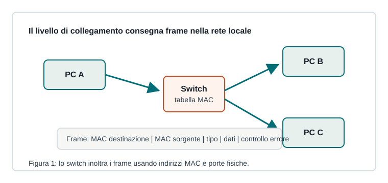

Capitoletto 2.2
Livello di collegamento
Il livello di collegamento organizza i bit in frame e gestisce la comunicazione tra nodi collegati alla stessa rete locale.

Frame e indirizzi MAC
Il frame è l'unità dati del livello di collegamento. Contiene l'indirizzo MAC del destinatario, l'indirizzo MAC del mittente, informazioni sul tipo di contenuto, i dati e un controllo per rilevare errori.
L'indirizzo MAC identifica una scheda di rete all'interno del collegamento locale. Non serve per attraversare Internet: per quello interviene il livello di rete con IP.
Ethernet e switch
Ethernet è la tecnologia cablata più diffusa nelle LAN. Gli switch imparano quali MAC si trovano dietro ogni porta osservando i frame in ingresso e costruendo una tabella di inoltro.
| Dispositivo | Livello | Funzione |
|---|---|---|
| Hub | fisico | ripete i segnali su tutte le porte |
| Switch | collegamento | inoltra frame verso la porta corretta |
| Router | rete | inoltra pacchetti tra reti differenti |
Accesso al mezzo ed errori
Quando più dispositivi condividono un mezzo, servono regole per evitare trasmissioni sovrapposte. Nelle reti moderne cablate gli switch riducono il problema perché ogni collegamento è dedicato; nel Wi-Fi il mezzo radio è condiviso e richiede procedure di coordinamento.
Il controllo FCS permette di rilevare molti errori di trasmissione: se il frame è corrotto viene scartato, lasciando ai livelli superiori l'eventuale recupero.
ARP: collegamento tra IP e MAC
In IPv4, ARP permette a un host di trovare il MAC associato a un indirizzo IP presente nella stessa rete locale. Senza questa risoluzione, il pacchetto IP non potrebbe essere inserito nel frame Ethernet destinato al prossimo nodo.
Ripasso
Perché uno switch è diverso da un hub?
Lo switch inoltra il frame solo sulla porta utile quando conosce il MAC; l'hub ripete il segnale a tutti.
A cosa serve ARP?
A trovare l'indirizzo MAC corrispondente a un indirizzo IPv4 nella stessa rete locale.